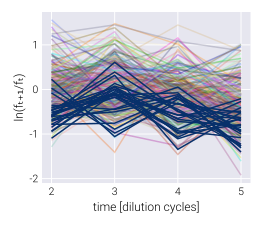
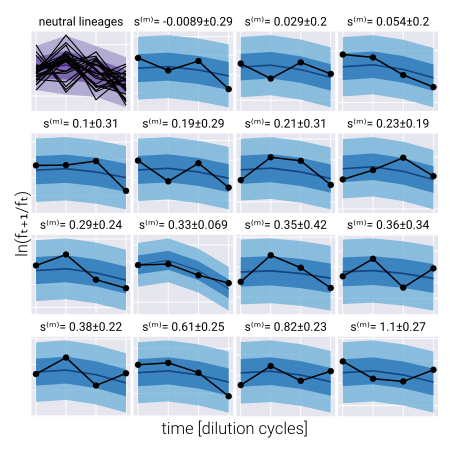

BarBay
Welcome to the documentation of BarBay.jl! The accompanying paper, Bayesian inference of relative fitness on high-throughput pooled competition assays, explains all of the biological and mathematical background needed to understand this package. Here, we mainly focus on how to use the package, assuming the user already understands the objective of inferring the posterior probability distribution of the relative fitness of mutant strains in a pooled competition assay.
The package is divided into modules. Here's a brief description of the content of each module, but please visit their respective documentations to understand what each module is intended for.
utils: Series of miscellaneous functions that make the data wrangling and processing much simpler.stats: Statistical functions used in the inference problem.model:Turing.jl-based Bayesian models used to infer the population mean fitness via the neutral lineages as well as the mutants' relative fitness.vi: The main module with which to implement the automatic differentiation variational inference modality of the inference pipeline.mcmc: The module with which to perform the Markov-Chain Monte Carlo sampling of the posterior distributions.
If you are interested in the mathematical details or want to get a quick reminder, please check the math tab.
Contents
- contributing
- examples
- General package imports
- Selecting the AutoDiff backend
- Single dataset single environment variational inference
- Single dataset single environment MCMC sampling
- Multi-environment single dataset variational inference
- Hierarchical model for multiple experimental replicates variational inference
- Hierarchical model for multiple barcodes mapping to same genotype variational inference
- BarBay
- math
- mcmc
- model
- stats
- utils
- vi
Example inference
To get you going with the package, let's walk through a basic inference pipeline for one competition assay. Our ultimate goal consists of inferring the relative fitness for each of the barcoded genotypes of interest. To that end, we assume that the frequency time-series obeys the following equation
\[f_{t+1}^{(b)} = f_{t}^{(b)} \mathrm{e}^{\left(s^{(b)} - \bar{s}_t \right)\tau}, \tag{1}\]
where $f_{t}^{(b)}$ is the frequency of barcode $b$ at the end of growth cycle$t$, $s^{(b)}$ is the relative fitness of this barcode, $\bar{s}_t$ is the population mean fitness at cycle $t$, and $\tau$ is the time interval between cycle $t$ and $t+1$.
The first step consists of importing the necessary packages.
We use import rather than the more common using command that most Julia tutorials and packages utilize. We find it better to keep the project organized, but feel free to use whatever is more convenient for you!
# Import Bayesian inference package
import BarBay
# Import libraries to manipulate data
import DataFrames as DF
import CSVAfter having imported the libraries, we need to load our dataset into memory.
BarBay.jl requires the dataset to follow the so-called tidy format. Effectively, what this means is that each observation is stored as a single line in the table. So, instead of having all barcode counts for a particular time point across some row (or column), each barcode count for each time point gets its own line. See the example below to get a sense of what this tidy format implies.
# Import data
data = CSV.read("/path/to/data/tidy_data.csv", DF.DataFrame)Here you will replace "/path/to/data/" with the directory where your data is stored, and "tidy_data.csv" with the name of the file containing the data. The resulting DataFrame looks something like this:
| time | barcode | count | neutral | freq |
|------|------------|-------|---------|-------------|
| 3 | neutral025 | 12478 | TRUE | 0.000543716 |
| 4 | neutral025 | 10252 | TRUE | 0.00034368 |
| 5 | neutral025 | 2883 | TRUE | 6.74E-05 |
| 1 | mut001 | 1044 | FALSE | 7.97E-05 |
| 2 | mut001 | 2010 | FALSE | 0.000121885 |
| 3 | mut001 | 766 | FALSE | 3.34E-05 |
| 4 | mut001 | 216 | FALSE | 7.24E-06 |
| 5 | mut001 | 120 | FALSE | 2.81E-06 |
| 1 | mut002 | 51484 | FALSE | 0.003930243 |The relevant columns in this data frame are:
barcode: The unique ID that identifies the barcode. This can be anything that helps you identify each barcode.count: The number of raw reads for each particular barcode.time: The time point ID indicating the order in which samples were taken. These must not be in units of time, but simply a serial progression indicating the cycle number.neutral: Boolean indicator of whether the barcode belongs to a neutral lineage or not.
Let's take a look at the data. For this we import the extra package that includes some plotting routines.
To make the package more modular, we did not include plotting functionalities since this can interfere with the installation of the package on remote servers. Instead, the accompanying paper repository includes a module (BayesFitUtils) that we can import to create basic plots using Makie.jl. There are other options within the Julia ecosystem that users might be more familiar with for plotting.
The BayesFitUtil.viz module has several Makie.jl-based functions to easily display the data. Let's import the necessary plotting libraries
# Import package with useful plotting functions for our dataset
import BayesFitUtils
# Import plotting libraries
using CairoMakie
import ColorSchemesFirst, let's plot the barcode frequency trajectories. For this, we use the convenient [BayesFitUtils.viz.bc_time_series!] function.
# Initialize figure
fig = Figure(resolution=(350, 300))
# Add axis
ax = Axis(
fig[1, 1], xlabel="time [dilution cycle]", ylabel="barcode frequency", yscale=log10
)
# Plot mutant barcode trajectories
BayesFitUtils.viz.bc_time_series!(
ax,
data[.!(data.neutral), :],
quant_col=:freq,
zero_lim=0,
alpha=0.35
)
# Plot neutral barcode trajectories
BayesFitUtils.viz.bc_time_series!(
ax,
data[data.neutral, :],
quant_col=:freq,
zero_lim=0,
color=ColorSchemes.Blues_9[end],
)We highlight the neutral barcodes⸺defined to have relative fitness $s^{(n)}=0$⸺with dark blue lines. The rest of the light-color lines correspond to individual barcodes.

We can rewrite Eq. (1) as
\[\frac{1}{\tau} \ln \frac{f_{t+1}^{(b)}}{f_{t}^{(b)}} = \left(s^{(b)} - \bar{s}_t \right). \tag{2}\]
In this form, we can se that the relevant quantity we need to infer the values of the population mean fitness $\bar{s}_t$ and the barcode relative fitness $s^{(b)}$ are not the frequencies themselves, but the log ratio of these frequencies between two adjacent time points. Let's plot this log frequency ratio using the [BayesFitUtils.viz.logfreq_ratio_time_series!] function.
For plotting purposes, we will use a naive estimate of the barcode frequencies by normalizing the number of reads by the total number of reads at each time point. In our inference pipeline, we estimate the frequency given the number of reads to include the uncertainty when converting one to the other.
# Initialize figure
fig = Figure(resolution=(400, 300))
# Add axis
ax = Axis(fig[1, 1], xlabel="time [dilution cycle]", ylabel="ln(fₜ₊₁/fₜ)")
# Plot mutant barcode trajectories
BayesFitUtils.viz.logfreq_ratio_time_series!(
ax,
data[.!(data.neutral), :],
alpha=0.3
)
# Plot neutral barcode trajectories
BayesFitUtils.viz.logfreq_ratio_time_series!(
ax,
data[data.neutral, :],
color=ColorSchemes.Blues_9[end],
)We expect is to see these log-frequency ratios as relatively flat lines. Especially for the neutral lineages.

Using the neutral lineages to determine our priors
One of the feature of Bayesian analysis is that we can include prior information into our inference task that encodes our domain expertise. For analysis with a lot of data, as long as the prior is broad-enough, this becomes less relevant. However, although we have a lot of data for multiple barcodes, we are actually in the low-data regime since for each barcode we typically have on the order of 4-5 time point measurements. Thus, defining appropriate priors is important for our inference pipeline. Unfortunately, we do not necessarily measure each genotype multiple times within the same experiment to get a sense of the expected variation in our measurements. An exception to this are the neutral barcodes. These barcodes represent multiple measurement of allegedly the same reference genotype. Therefore, we can use the variability within these measurements to define the priors for our inference. Let's now take the neutrals data and obtain these parameters
BarBay.jl includes the function naive_prior within the stats module to compute priors for some of the parameters based on the neutral lineages data. We point the user to the accompanying paper to see details on these prior selection.
# Compute naive priors from neutral strains
naive_priors = BarBay.stats.naive_prior(data)
# Select standard deviation parameters
s_pop_prior = hcat(
naive_priors[:s_pop_prior],
repeat([0.05], length(naive_priors[:s_pop_prior]))
)
logσ_pop_prior = hcat(
naive_priors[:logσ_pop_prior],
repeat([1.0], length(naive_priors[:logσ_pop_prior]))
)
logσ_bc_prior = [StatsBase.mean(naive_priors[:logσ_pop_prior]), 1.0]
logλ_prior = hcat(
naive_priors[:logλ_prior],
repeat([3.0], length(naive_priors[:logλ_prior]))
)Running the inference
With these priors in hand, we can run the inference. For this, we use the BarBay.vi.advi function from the vi module. The main parameters we need to define are:
:data: Tidy data frame containing the raw barcode counts.:outputname: String defining the pattern for the output file. This can be something related to the dataset. For example, the growth media, or the date of the experiment, of whatever metadata used to distinguish different datasets.:model: Bayesian model from the model module that defines the posterior distribution to be sampled.:model_kwargs: The parameters required by themodelfunction.:advi: Indicating the ADVI implementation with the corresponding number of samples and steps.opt: Optimization algorithm for ADVI.
To speed-up the computation for a large number of parameters, we will use ReverseDiff.jl as the automatic differentiation backend, also known as backpropagation (see Turing.jl documentation for more information on this). This is generally a good practice if the number of barcodes is large. However, for small datasets, we recommend using ForwardDiff.jl instead.
The AutoDiff backend for ADVI is set using the AdvancedVI module. This is done in the :advi option of the param dictionary. For ForwardDiff.jl, we can do :advi => Turing.ADVI(n_samples, n_steps), as ForwardDiff.jl is the default backend. For ReverseDiff.jl, we need to do :advi => Turing.ADVI{AdvancedVI.ReverseDiffAD{false}}(n_samples, n_steps), where the false indicates that we won't use the cache for the random number tape. See the AdvancedVI.jl repository for more information.
# Import library to perform Bayesian inference
import Turing
# Import library to set AutoDiff backend for ADVI
import AdvancedVI
# Import AutoDiff backend
using ReverseDiffFor this dataset, we use the BarBay.model.fitness_normal model from the model module. Now, we can compile all of the necessary parameters into a dictionary.
# Define number of samples and steps
n_samples = 1
n_steps = 3_000
# Define function parameters
param = Dict(
:data => data,
:outputname => "./output/advi_meanfield_" *
"$(lpad(n_samples, 2, "0"))samples_$(n_steps)steps",
:model => BarBay.model.fitness_normal,
:model_kwargs => Dict(
:s_pop_prior => s_pop_prior,
:logσ_pop_prior => logσ_pop_prior,
:logσ_bc_prior => logσ_bc_prior,
:s_bc_prior => [0.0, 1.0],
:logλ_prior => logλ_prior,
),
:advi => Turing.ADVI{AdvancedVI.ReverseDiffAD{false}}(n_samples, n_steps),
:opt => Turing.TruncatedADAGrad(),
)Next, we run the inference.
BarBay.vi.advi(; param...)Inference output
After running the inference, the output of is a .csv file of the form
| mean | std | varname | vartype | rep | env | id |
|-----------------------|----------------------|-----------|------------------|-----|------|--------|
| 0.6769813021009923 | 0.019270434240452546 | s̲ₜ[1] | pop_mean_fitness | R1 | env1 | N/A |
| 0.5979391468267903 | 0.023068814619647663 | s̲ₜ[2] | pop_mean_fitness | R1 | env1 | N/A |
| 0.7794031847044068 | 0.021637905105449048 | s̲ₜ[3] | pop_mean_fitness | R1 | env1 | N/A |
| 1.097531601258874 | 0.020140458476711063 | s̲ₜ[4] | pop_mean_fitness | R1 | env1 | N/A |
| -1.1349279694117884 | 0.13764164137709486 | logσ̲ₜ[1] | pop_std | R1 | env1 | N/A |
| -0.8537538300547914 | 0.14427221564497342 | logσ̲ₜ[2] | pop_std | R1 | env1 | N/A |
| -1.0036841099650615 | 0.14850736993662278 | logσ̲ₜ[3] | pop_std | R1 | env1 | N/A |
| -1.0111319869238307 | 0.13429835511246288 | logσ̲ₜ[4] | pop_std | R1 | env1 | N/A |
| -0.023508979117674522 | 0.42814608044575164 | s̲⁽ᵐ⁾[1] | bc_fitness | R1 | env1 | mut001 |
| -0.08443525829413444 | 0.2749553846185592 | s̲⁽ᵐ⁾[2] | bc_fitness | R1 | env1 | mut002 |
| -0.05274382497169921 | 0.1535891599128269 | s̲⁽ᵐ⁾[3] | bc_fitness | R1 | env1 | mut003 |
| 0.14655295685583677 | 0.32454211197027244 | s̲⁽ᵐ⁾[4] | bc_fitness | R1 | env1 | mut004 |
| 0.06093015139986163 | 0.055690708045292796 | s̲⁽ᵐ⁾[5] | bc_fitness | R1 | env1 | mut005 |
| 0.07170404879708663 | 0.2969475992920767 | s̲⁽ᵐ⁾[6] | bc_fitness | R1 | env1 | mut006 |
| 0.03640967790708551 | 0.2664593948070634 | s̲⁽ᵐ⁾[7] | bc_fitness | R1 | env1 | mut007 |Recall that our implementation of variational inference assumes the true posterior distribution can be approximated by a multivariate Gaussian distribution with a diagonal covariance matrix. Therefore, the marginal posterior distribution for each of the inferred parameters can be fully parametrized with two numbers: the mean and the standard deviation.
The columns of this file are
mean: The mean of the marginal posterior distribution for the variable.std: The standard deviation of the marginal posterior distribution for the variable.varname: The name of the variable within theTuring.jlmodel. For the most part, you can ignore this column.vartype: Description of the type of parameter. The types are:pop_mean_fitness: Population mean fitness values̲ₜ.pop_error: (Nuisance parameter) Log of standard deviation in the likelihood function for the neutral lineages.bc_fitness: Mutant relative fitnesss⁽ᵐ⁾.bc_hyperfitness: For hierarchical models, mutant hyperparameter that connects the fitness over multiple experimental replicates or multiple genotypesθ⁽ᵐ⁾.bc_noncenter: (Nuisance parameter) For hierarchical models, non-centered samples used to connect the experimental replicates to the hyperparameterθ̃⁽ᵐ⁾.bc_deviations: (Nuisance parameter) For hierarchical models, samples that define the log of the deviation from the hyperparameter fitness valuelogτ⁽ᵐ⁾.bc_error: (Nuisance parameter) Log of standard deviation in the likelihood function for the mutant lineages.freq: (Nuisance parameter) Log of the Poisson parameter used to define the frequency of each lineage.
rep: Experimental replicate number.env: Environment for each parameter.id: Mutant or neutral strain ID.
Validating the inference
To visualize the performance of the inference pipeline in fitting the fitness model to data, we can compute the so-called posterior predictive checks (PPC). In short, the PPC consists of repeatedly generating synthetic datasets in agreement with the results from the inference results. In other words, we use the resulting parameter values from the ADVI inference to generate possible datasets in agreement with the inferred values.
The first step consists of loading the inference results into memory
# Read ADVI results
df_advi = CSV.read("/path/to/advi/advi_results.csv", DF.DataFrame)Next, we generate random samples from the posterior distribution. The idea being that we will generate synthetic data for each of these parameter samples consistent with our data. With a large enough number of samples, we should be able to determine the range where we expect our data to lie.
# Define number of samples
n_samples = 10_000
# Sample from posterior MvNormal
df_samples = DF.DataFrame(
Random.rand(
Distributions.MvNormal(
df_advi.mean, LinearAlgebra.Diagonal(df_advi.std .^ 2)
),
n_samples
)',
df_advi.varname
)Finally, we can use the BarBay.stats.logfreq_ratio_popmean_ppc function for neutral lineages or BarBay.stats.logfreq_ratio_bc_ppc for non-neutral lineages to generate the corresponding posterior predictive checks. In the code that follows, we embed this ppc sampling within the generation of diagnostic plots.
We remind users that the custom plotting functions are not included in the BarBay.jl package. The following code is only meant to serve as a guidance for users to know how to generate diagnostic plots.
# Initialize figure
fig = Figure(resolution=(600, 600))
# Add grid layout for posterior predictive checks
gl_ppc = fig[1, 1] = GridLayout()
# Define number of posterior predictive check samples
n_ppc = 500
# Define quantiles to compute
qs = [0.95, 0.675, 0.05]
# Define number of rows and columns
n_row, n_col = [4, 4]
# List example barcodes to plot
bc_plot = StatsBase.sample(
eachrow(DF.sort(df_fitness, :mean)),
n_row * n_col,
replace=false,
ordered=true
)
# Initialize plot counter
counter = 1
# Loop through rows
for row in 1:n_row
# Loop through columns
for col in 1:n_col
# Add axis
local ax = Axis(gl_ppc[row, col], aspect=AxisAspect(1.25))
# Check if first first entry
if (row == 1) & (col == 1)
# Define dictionary with corresponding parameters for variables
# needed for the posterior predictive checks
param = Dict(
:population_mean_fitness => :s̲ₜ,
:population_std_fitness => :σ̲ₜ,
)
# Define colors
local colors = get(
ColorSchemes.Purples_9, LinRange(0.5, 1.0, length(qs))
)
# Compute posterior predictive checks
local ppc_mat = BarBay.stats.logfreq_ratio_popmean_ppc(
df_samples, n_ppc; model=:normal, param=param
)
# Define time
t = vec(collect(axes(ppc_mat, 2)) .+ 1)
# Plot posterior predictive checks
BayesFitUtils.viz.ppc_time_series!(
ax, qs, ppc_mat; colors=colors, time=t
)
# Plot log-frequency ratio of neutrals
BayesFitUtils.viz.logfreq_ratio_time_series!(
ax,
data[data.neutral, :];
freq_col=:freq,
color=:black,
alpha=1.0,
linewidth=1.5
)
# Hide axis decorations
hidedecorations!.(ax, grid=false)
ax.title = "neutral lineages"
# ax.titlesize = 18
counter += 1
continue
end # if
# Extract data
data_bc = DF.sort(
data[data.barcode.==bc_plot[counter].id, :], :time
)
# Define colors
local colors = get(ColorSchemes.Blues_9, LinRange(0.5, 1.0, length(qs)))
# Define dictionary with corresponding parameters for variables needed
# for the posterior predictive checks
local param = Dict(
:bc_mean_fitness => Symbol(bc_plot[counter].varname),
:bc_std_fitness => Symbol(
replace(bc_plot[counter].varname, "s" => "logσ")
),
:population_mean_fitness => :s̲ₜ,
)
# Compute posterior predictive checks
local ppc_mat = BarBay.stats.logfreq_ratio_bc_ppc(
df_samples, n_ppc; model=:normal, param=param
)
# Plot posterior predictive checks
BayesFitUtils.viz.ppc_time_series!(
ax, qs, ppc_mat; colors=colors
)
# Add scatter of data
scatterlines!(ax, diff(log.(data_bc.freq)), color=:black, linewidth=2.0)
# Define fitness ranges to display in title
vals = [
round(bc_plot[counter].mean; sigdigits=2),
round(bc_plot[counter].std; sigdigits=2),
]
# Add title
ax.title = "s⁽ᵐ⁾= $(vals[1])±$(vals[2])"
## == Plot format == ##
# Hide axis decorations
hidedecorations!.(ax, grid=false)
# Update counter
global counter += 1
end # for
end # for
# Add x-axis label
Label(gl_ppc[end, :, Bottom()], "time points", fontsize=22)
# Add y-axis label
Label(gl_ppc[:, 1, Left()], "ln(fₜ₊₁/fₜ)", rotation=π / 2, fontsize=22)
# Set spacing
rowgap!(gl_ppc, 0)
colgap!(gl_ppc, 4)
These are examples of the posterior predictive checks for all neutral lineages (upper left panel) and a subset of representative mutant lineages. Shaded regions represent the 95%, 68%, and 5% credible regions for the data. The reported errors above the plot represent the 68% credible region on the mutant relative fitness marginal distribution.
As we can see, the data lies within the quantiles, suggesting the inference worked and the model is able to capture the general trend of the barcode trajectories!